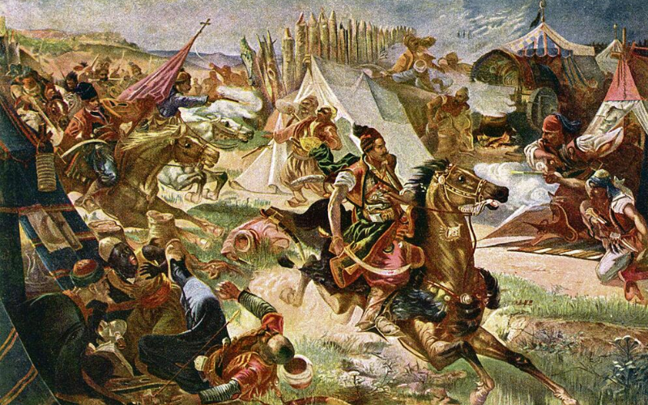

4 Kad Beograd Srbi uzimaše
Quand les Serbes prirent Belgrade
(Šesta Rukovet - 6ème guirlande : 03:35,5 - 04:03)

|
|
 La Serbie en 1813 |
"Kad Beograd Srbi uzimaÅ¡e" Version Rukovet 6 "Kad Beograd Srbi uzimaÅ¡e" chanté par Slobodan StankoviÄ "Hajduk Veljko peva" chanté par Slobodan StankoviÄ "Vino pije Hajduk Veljko" chanté par Dragoljub LazareviÄ |
 Hajduk Veljko PetroviÄ |
NOTE
|
УпÑÐºÐ¾Ñ Ð»ÐµÐ¿Ð¾Ñ Ð¼ÐµÐ»Ð¾Ð´Ð¸Ñи, Ð¾Ð²Ð°Ñ âподвигâ наÑодног Ñ
еÑоÑа далеко Ñе од дивÑеÑа. ÐаÑзеÑе ÐеогÑада од ÑÑÑане ÐаÑаÄоÑÄевиÑ
ÑÑÑпа догодило Ñе 27. деÑембÑа 1804. године, на пÑазник СвеÑог ÐндÑеÑа, заÑÑиÑника СÑбиÑе. Ðа ÑаÑÑеÑамо Ð½ÐµÐ»Ð°Ð³Ð¾Ð´Ñ ÐºÐ¾ÑÑ Ñаква пеÑма не може да не изазове, овде ÑеÑе пÑонаÑи две пеÑме за пиÑе коÑе би ÐокÑаÑÐ°Ñ Ð¼Ð¾Ð³Ð°Ð¾ да Ð¼Ñ Ñе виÑе допада, да ниÑе било Ñене ÑзвиÑене мелодиÑе: âÐева Ñ Ð°ÑдÑк ÐеÑко ÐеÑÑовиÑâ и âÐино пиÑе ХаÑдÑк ÐеÑкоâ . У ÑÐµÐ´Ð½Ð¾Ñ ÐеÑко, коÑи наÑÑÑе на "ÑаÑy" вина од 3 лиÑÑа (!), жели да гÑли кÑÑмаÑиÑÑ Ð¸ ÑÐµÐ½Ñ ÑнаÑÑ. ÐÑÑги га показÑÑе како пиÑе вино и ÑакиÑÑ Ñe изговаÑа ÑвоÑÑ ÑÑÐ²ÐµÐ½Ñ Ð·Ð°ÐºÐ»ÐµÑвÑ: "Ðлавy давам, a ÐÑаÑинy не давам!" |
En dépit de la belle mélodie, cet "exploit" du héros national est loin de forcer l'admiration. La prise de Belgrade par les troupes de Karageorges eut lieu le 27 décembre 1804, fête de saint André, patron de la Serbie. Pour dissiper le malaise que ne peut manquer de susciter un tel chant, on trouvera ici deux chansons à boire que Mokranjac aurait pu lui préférer, n'eût été sa belle mélodie: "Hajduk Veljko PetroviÄ chante" et "Hajduk Veljko boit du vin". Dans l'une, Veljko qui s'attaque à une bonbonne de 3 litres de vin, veut embrasser la patronne et sa belle-fille. L'autre le montre buvant du vin et de l'eau-de-vie et prononçant sa phrase célèbre: "Ma tête, oui, la Krajina, jamais!" |